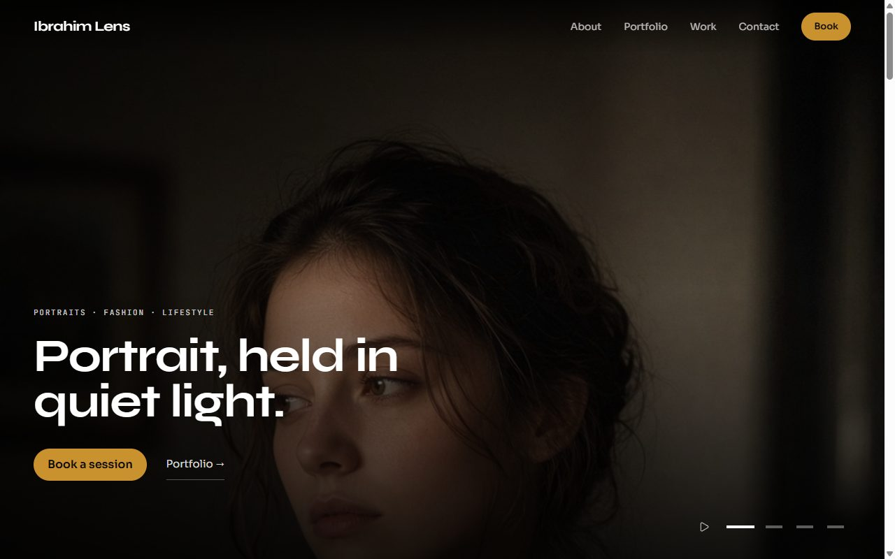
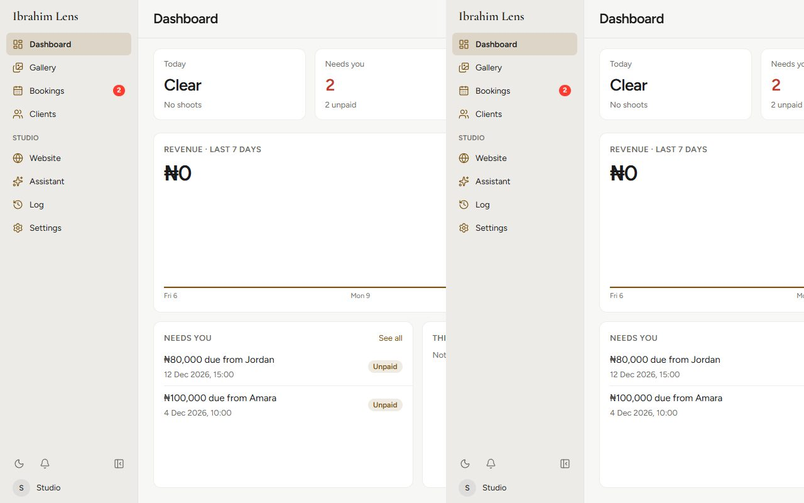
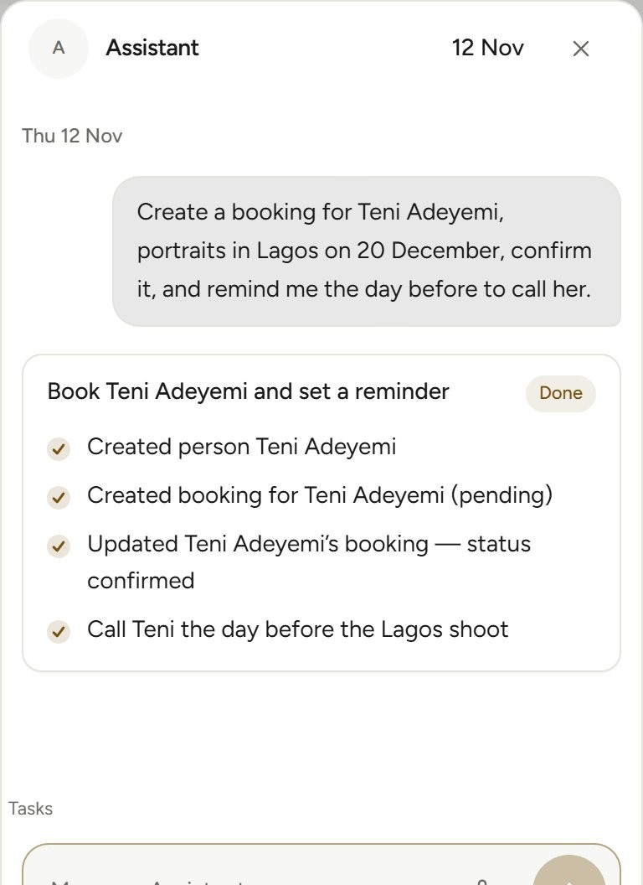
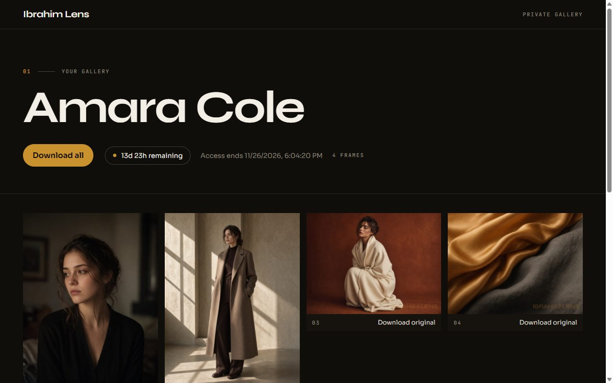
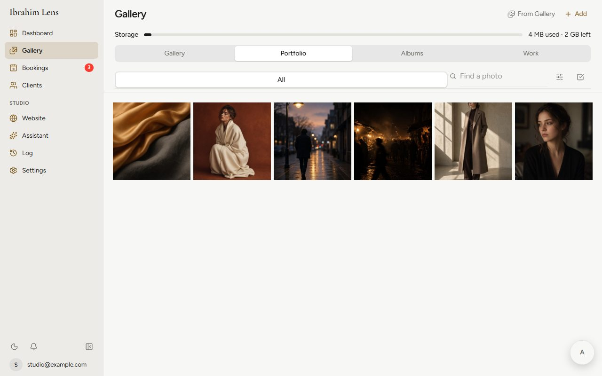
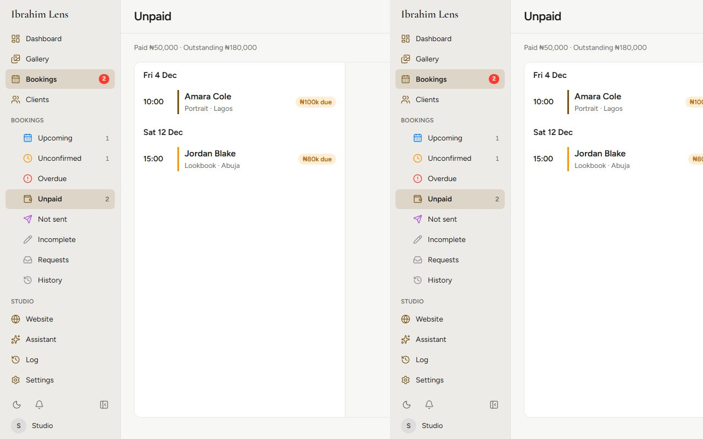
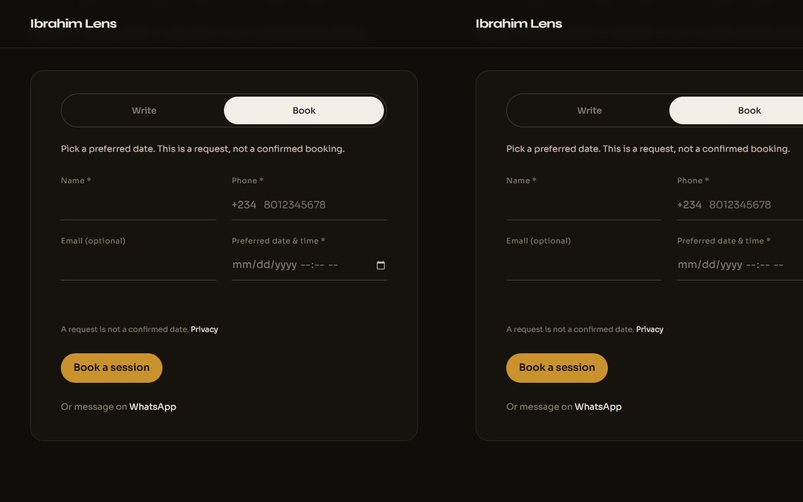

A case study by PrinceGOdsplan
I built him a desk he can run from his phone.
One place for who wrote, who is booked, the fee, what has been paid, whose pictures those are, and what the public site says.
Ibrahim Lens is a photographer, and before this he was running the business out of too many places. Someone would write to him in one app, the date would be written down somewhere else, the fee and what had been paid lived in a notebook, and the photos sat in a folder he had to send by hand. The website was the part he could not touch. If he wanted a new line on the home page, or a photo on the portfolio, he had to wait for someone else to do it.
What I built is one desk. He opens it on his phone between jobs. From there he can see who wrote, who is booked, what the fee is, what has been paid, whose pictures he is looking at, and what the public site currently says. The public pages are what a client sees when they come to book or look at the work. Studio is where he actually runs the day.
The live site is ibrahimlens.com.ng. The screenshots here are not his real clients. I filled a local copy with two made-up people, Amara Cole and Jordan Blake, and I generated the photos. Amara’s portraits are ₦150,000 with ₦50,000 already paid. Jordan’s lookbook is ₦80,000 and still unpaid. The phone number and the email on the demo are fake on purpose, so none of his real contact details are on this page.

He does the work on the phone, so Studio had to work there.
Same desk, phone width, with a bottom bar: Home, Gallery, Bookings, Clients, and More.
He answers people while he is out, usually standing up, usually on his phone. I did not build a second app for that. Studio is the same app at phone width, and the bottom bar is how he moves around it: Home, Gallery, Bookings, Clients, and More. Website, the log, and settings sit under More, because five things on a thumb is enough and seven is a mess.
Home is the short list, not a yearly chart. Today tells him if he has a shoot. Needs you is the count of things still waiting on him. Outstanding is the naira that has not come in yet. On this demo that is ₦180,000 across the two bookings, Amara’s remaining ₦100,000 and Jordan’s ₦80,000. Under that, the page says who the money is for. Jordan is the one still fully unpaid, so his name is the one sitting in Needs you.
I kept the tab bar on the screen. That sounds small until you use it on a phone and the bar jumps, or the keyboard covers it, or a label gets clipped. He misses the tap, and then the desk feels broken. The bar is part of the layout, not something I paint on top and hope stays put. He can also add Studio to his home screen, so it opens like an app instead of a tab he has to go find.
The public site does not have any of this. A visitor does not get a login, and they do not download the desk. If he sets a PIN, it sits in front of Studio on a shared phone. The website stays a website.


The assistant can talk. It cannot write by itself.
He can ask for a new client by name, a confirmed booking, and a reminder, and the card shows each of those done.
The useful version of this is a sentence like “create a booking for Teni Adeyemi, portraits in Lagos on 20 December, confirm it, and remind me the day before to call her.” That is three writes: a person who was not on the desk yet, a booking, and a reminder tied to that booking. A chat box that only answers does not do any of them. A chat box that writes straight into the database is worse, because one loose sentence can book the wrong person.
So I split the two jobs. The model can read, it can search the log, and it can hand back one job. The job is a title and an ordered list of steps, and the steps use people’s names, not record ids. He does not talk in ids. A separate executor takes that job, finds the person, and writes through the same path the buttons use. That matters, because then a change from the chat has the same permission check and the same log line as a change he made with his thumb.
Each step shows up on a card. Done, waiting, needs a detail, or failed. If a name matches two people, it stops and asks. It does not pick one. If a step needs something he has not said, the card waits. If a step fails, the later steps do not pretend they ran. A finished card stays in the thread, so when he opens it the next day he can see what actually happened, not a reply that says it is done.
A delete does not run until he taps yes on that card. The yes goes to the executor. It does not go back through the model, because I do not want the model to be the thing that confirms its own delete. The same job, inside a minute, is not run twice. Refreshing the page does not start a second conversation. The thread is one record on the server: a short summary, then the last twelve turns.
Questions go to a cheaper model. A change goes to a stronger one. The screen does not show the model name, and it does not show a token count. He does not need either of those to know whether Teni got booked. I also do not send the photo files to the model. They stay in the picker and in PocketBase. The model gets the names.

If the money changed, the log changed in the same request.
The save and the log line go together, and a payment reads as naira, not as two raw numbers.
A desk he cannot look back on is not much use when a client says they already paid. Every change that matters writes a line in the same request as the save. If the save fails, the log does not say it worked. If the process dies between the two, I do not want a payment with no history, or a history of a payment that never landed, so they go together.
The line is a sentence he can read, and it says who did it. Him, the assistant, the client, or the system. The assistant’s line looks like his, because the executor uses the same write. Under the sentence, when a number changed, is the old value and the new one. A payment shows as naira, ₦0 to ₦50,000, because that is how he thinks about a booking. I did not dump every field on the row into the log. He would not read that on a phone.
I kept it to one log. A second activity table sounds tidy until the two of them disagree, and then he does not know which one to trust. On the demo you can see the three kinds of line next to each other. He opened a private gallery for Amara. The assistant marked the portrait booking part-paid. Jordan sent a booking request for a lookbook in Abuja.

A delivery is a private link, not a page on the site.
The client gets a link that expires. It is not on the public menu, and it does not put the photos on the portfolio.
The pictures he sells are not the pictures on the website. After a job he sends the client a link. The page only opens if that token matches a delivery that has not been revoked and has not expired. The client does not make an account, and they do not get a password. The link is the way in, and it stops working on a date.
On the page they can download the set, or download one original, and they can leave a line about how it felt. If he likes that line, he can turn it into a testimonial later, from the desk. It does not appear on the public site by itself. Publishing a quote is a separate thing he chooses to do.
The demo gallery is Amara’s four portraits, and the link expires in fourteen days. The clock on the page is the date on the record. When that date passes, the same link stops opening. I do not have to take the page down. If he wants it closed earlier, he revokes it from the desk. The page is not in the public menu. You have the link, or you do not.
I did not make “send the gallery” also mean “put it on the portfolio.” A paid set and a public set are two decisions. He might want the client to have the files and still not want those frames on the website.

A photo is uploaded once. Then he decides where it shows.
One file can sit in the library, go on the portfolio, cover a work story, or go into a private delivery.
A frame comes in once. After that it can sit in the library, go on the portfolio, become the cover of a work story, or go into a private delivery. If I had stored four copies, a better crop would mean replacing four files and hoping he remembered all of them. One file, and a record of where it is allowed to show, means the public site, the story, and the client gallery are just different views of the same library.
The portfolio is a rule, not a second upload. A frame is on the site when he marks it for the portfolio and it lives in the portfolio room, not in a private pile. A work story is public when he says that story is on the website. The home slideshow points at the frame by id. If he removes the frame, the slide goes with it. I did not keep a separate list of image URLs in the page copy, because that list would go stale the first time he deleted something.
He edits the public words from Studio too. A line on the home page, a story taken off the site, a frame moved onto the portfolio: those are records, and the site reads them. A caption does not wait on me, and it does not wait on a deploy. A code change still does. That was the actual problem. He is a photographer, not someone who should have to message a developer to change a sentence.
The booking form is the public door into the same records. Someone fills it in, and that creates a person and a booking. It shows up on the desk as unpaid until he sets the fee and what has been paid. Jordan came in that way, a lookbook in Abuja, ₦80,000, nothing paid yet. Amara’s portraits are ₦150,000 with ₦50,000 in. Both of them are made up. So is the contact on the form in these screenshots.





One app, two jobs, and I wrote the plan before the screens.
The public site and Studio are routes in one app. A visitor never downloads the desk.
The public site and Studio are route groups in one Vite app. A visitor hits the public routes and never downloads Studio. The delivery page is its own route, and it checks the token before it shows anything. Studio sits behind sign-in. I kept them in one codebase because they share the records. Splitting them into two projects would have meant two deploys every time a booking field changed.
They do not look the same, and I did not want them to. The public pages are a dark photo site. The type is for the pictures, and the filled button is Book. Studio is a light desk, with a night option he can turn on if he wants it. If I had used one skin for both, the bookings table would have looked like a poster, or the portfolio would have looked like a form. They are different jobs.
I wrote the specs and the task list before I built, so the collections and the screens had names before I started on the components. Those notes stay with the code. This repo is the write-up, not the application. I am not putting the source here.
PocketBase holds the accounts, the records, and the files. That is the API and the file store. I did not stand up a separate API and a separate place for the photos, because then every screen would have had two systems to keep in sync. Public rules decide what a stranger can read. A portfolio frame can be public. A delivery cannot, unless the token matches. Studio rules decide what a signed-in user can write. The browser talks to PocketBase for those records.
In production the site is a static build, and PocketBase sits behind Caddy. Locally I run both. The stack is React, Vite, TypeScript, Tailwind, PocketBase, Docker, and Caddy.